Chapter 3: Cooling & Thermal Management¶
Every watt a server uses turns into heat, and removing that heat reliably and efficiently is one of the biggest jobs in any data centre. This chapter starts with the basic physics of heat and airflow, then walks through the ASHRAE limits, air-cooling equipment, containment, chillers, free cooling and water use. It finishes with the liquid-cooling technologies, heat reuse, simulation tools and design choices that make today's 100 kW+ AI racks possible.
3.1 Heat Basics: Watts, BTUs, Tons and Delta-T¶
Almost every watt of electricity a server uses ends up as heat in the room, so a 10 kW rack is really a 10 kW heater that must be cooled all day, every day. Cooling engineers move that heat away using air or water, and they measure it in kilowatts, BTUs per hour or 'tons'. The key idea is delta-T: how much warmer the air or water leaves than when it arrived.
Think of it like…
Cooling a data hall is like carrying water out of a leaking boat with buckets: the heat leak is the IT load, each bucket is a kilogram of air or water, and delta-T is how full you fill each bucket.
Real-world example
Priya, a junior engineer at the fictional Harbourline Data, is asked how much air a new 12 kW rack needs. Its servers raise air temperature by about 11 °C (20 °F), so she uses CFM = 3.16 x 12,000 W / 20 °F and gets roughly 1,900 CFM (about 3,200 m³/h). If the same heat were carried by water warming 10 °C, it would need only about 0.29 litres per second. That huge difference is why high-density AI racks are moving to liquid cooling.
How it works¶
- Find the heat load: IT power in kW is (almost exactly) the heat in kW the cooling must remove.
- Convert units if needed: 1 kW = 3,412 BTU/h, and 1 ton of refrigeration = 12,000 BTU/h = 3.517 kW.
- Choose a delta-T: the bigger the temperature rise across the servers or coil, the less air or water you must move.
- Size the flow: airflow (CFM or m³/h) for air, litres per second for water, using heat = mass flow x specific heat x delta-T.
- Check humidity: keep air above its dew point limits so nothing condenses and static stays low.
Who uses it
Mechanical engineers, critical facilities technicians, data-centre designers and capacity planners use these numbers daily when sizing coolers, pipes and fans.
Key takeaway
Memorise three conversions: 1 kW = 3,412 BTU/h, 1 ton = 3.517 kW, and CFM ≈ 3.16 x watts / delta-T in °F (about 158 CFM per kW at a 20 °F rise).
Going deeper
- The master equation is Q = ṁ × cp × ΔT. For air at sea level, 1 m³/s warming 10 °C carries about 12 kW; for water, 1 L/s warming 10 °C carries about 42 kW.
- Per unit volume water holds roughly 3,500 times more heat than air, which is why a 50 mm pipe can replace a duct big enough to walk through.
- Temperature differences convert with 1.8 only: a 20 °F rise is 11 °C. The +32 offset applies to absolute temperatures, never to delta-T values.
- Server fans slow at light load and speed up when inlet air is hot, so a server's ΔT and airflow change with workload and room conditions; vendors publish both.
- Cooling plant is rated in kW of heat (kWth or kWr), while it consumes far fewer kW of electricity; the ratio between them is the coefficient of performance (COP).
- Design loads add non-IT gains (UPS and transformer losses, lighting, people at roughly 100 W each, solar gain) and a margin, then apply redundancy such as N+1.
Common mistakes & misconceptions
- Confusing cooling capacity with electrical input: a 1,000 kW chiller removes 1,000 kW of heat but may draw only about 150-250 kW of electricity.
- Sizing cooling from server nameplate ratings; measured draw is usually much lower, so nameplate sizing strands money in oversized plant.
- Thinking more airflow is always better; oversupplying air lowers ΔT, wastes fan energy and sends cold air straight back to the coolers.
- Converting a °F temperature rise with the full °F-to-°C formula; for differences, just divide by 1.8.
Try it: Python: airflow and water flow needed to remove a rack's heat¶
rack_kw = 12
dt_air_c = 11 # air temperature rise across servers
dt_water_c = 10 # water temperature rise
# Air: m3/s = kW / (density 1.2 kg/m3 x cp 1.005 kJ/kgK x dT)
air_m3s = rack_kw / (1.2 * 1.005 * dt_air_c)
print(f'Air: {air_m3s*3600:,.0f} m3/h = {air_m3s*2118.9:,.0f} CFM')
# Water: L/s = kW / (4.186 kJ/kgK x dT) (1 L water ~ 1 kg)
water_ls = rack_kw / (4.186 * dt_water_c)
print(f'Water: {water_ls:.2f} L/s = {water_ls*60:.1f} L/min')
print(f'BTU/h: {rack_kw*3412:,.0f} Tons: {rack_kw/3.517:.1f}')
Key equipment, standards, metrics, vendors & tools¶
| Name | What it does | Example |
|---|---|---|
| Heat load (kW) Physics: conservation of energy · Concept · Current · Mechanical |
Electrical power consumed by IT equipment turns almost entirely into heat that the cooling system must remove. | A 1 MW data hall running at full load needs at least 1 MW of heat removal, plus heat from lights, people and UPS losses. |
| Delta-T (ΔT) General thermodynamics · Metric · Current · Mechanical |
Temperature difference between the incoming and outgoing air or water; higher delta-T moves more heat per unit of flow. | Air enters a server at 24 °C and leaves at 38 °C, so the server delta-T is 14 °C. |
| CFM and m³/h Airflow units (imperial / metric) · Metric · Current · Mechanical |
Cubic feet per minute and cubic metres per hour measure how much air a fan or cooler moves; 1 CFM ≈ 1.7 m³/h. | A cooling unit rated 20,000 CFM moves about 34,000 m³ of air every hour. |
| Sensible heat formula HVAC engineering practice · Concept · Current · Mechanical |
Heat (BTU/h) = 1.08 x CFM x ΔT(°F) for air; rearranged, CFM ≈ 3.16 x watts / ΔT(°F). | A 5 kW rack with a 25 °F rise needs about 3.16 x 5,000 / 25 = 632 CFM. |
| Specific heat capacity Physics · Concept · Current · Mechanical |
Energy to warm 1 kg by 1 °C: about 4.19 kJ for water, 1.0 kJ for air and roughly 3.9 kJ for PG25. | Water stores about four times more heat per kilogram than air at the same temperature rise. |
| Volumetric heat capacity Physics · Concept · Current · Mechanical |
Heat carried per cubic metre per degree; water carries roughly 3,500 times more than the same volume of air. | A pipe of water a few centimetres wide can replace a large air duct for the same heat load. |
| Sensible vs latent heat HVAC engineering practice · Concept · Current · Mechanical |
Sensible heat changes temperature; latent heat is absorbed or released when water evaporates or condenses without temperature change. | Data-centre loads are almost all sensible heat, so coolers are chosen with a high sensible heat ratio. |
| Sensible heat ratio (SHR) HVAC engineering practice · Metric · Current · Mechanical |
Fraction of a cooler's capacity that lowers temperature rather than removing moisture; data-centre units aim close to 1.0. | A unit with SHR 0.95 spends only 5% of its effort dehumidifying the air. |
| Relative humidity (RH) Psychrometrics · Metric · Current · Mechanical |
How much moisture air holds compared with the maximum it could hold at that temperature, as a percentage. | Air at 24 °C and 50% RH holds half the water vapour it could before saturating. |
| Dew point Psychrometrics · Metric · Current · Mechanical |
Temperature at which air becomes saturated and water starts condensing; an absolute measure of moisture content. | Air at 24 °C and 50% RH has a dew point near 13 °C, so pipes colder than that will sweat. |
| Psychrometric chart ASHRAE and HVAC references · Tool · Current · Mechanical |
Graph linking temperature, humidity, dew point and enthalpy of air, used to plan cooling and humidity control. | An engineer plots outdoor conditions on the chart to see how many hours evaporative cooling will work. |
| Heat density (kW per rack) Industry practice · Metric · Current · Facilities |
Heat produced by one rack; traditional IT runs about 5-15 kW, while AI GPU racks exceed 100 kW. | A hall designed for 8 kW racks cannot simply accept a 120 kW GPU rack without liquid cooling. |
| Heat-flow equation (Q = ṁ·cp·ΔT) Thermodynamics · Concept · Current · Mechanical |
Heat carried equals mass flow times specific heat times temperature rise; it sizes every fan, pump and pipe. | Water at 1 L/s warming 10 °C carries about 42 kW; the same equation with air gives fan airflow. |
| Server airflow per kW Server vendor data; ASHRAE TC 9.9 · Metric · Current · Mechanical |
Air a server draws per kW of load, set by its fans and ΔT; roughly 80-160 CFM per kW for typical servers. | A capacity planner adds up vendor airflow figures to check the cold aisle receives more air than servers pull. |
| Non-IT heat gains HVAC load calculation practice · Concept · Current · Mechanical |
Extra heat from UPS and transformer losses, lighting, people, fans and sun on walls that cooling must also remove. | A 1 MW hall's cooling is sized for about 1.1 MW once UPS losses, lights and solar gain are added. |
3.2 ASHRAE Thermal Guidelines & Environmental Limits¶
ASHRAE, a large engineering society, publishes the guidelines that almost every data centre uses to decide how warm, cool, dry or humid the air entering servers should be. Its 'recommended' range for most IT is 18-27 °C at the server inlet, with wider 'allowable' ranges for short periods or tougher equipment. It also sets limits for dust, corrosive gases and the water temperatures used for liquid cooling.
Think of it like…
The ASHRAE envelope is like the storage instructions on a medicine box: keep between certain temperatures and away from damp, and the product works as promised for its whole life.
Real-world example
Kofi runs operations at the fictional Northgate Colo and wants to save energy by raising the supply air from 20 °C to 25 °C. He checks that all inlet sensors stay within ASHRAE's 18-27 °C recommended range and that the dew point stays below 15 °C. Chiller energy falls and free-cooling hours rise, yet the servers remain inside their warranty conditions. He keeps an old storage array on a separate, cooler aisle because it is only rated for a tighter class.
How it works¶
- Measure temperature and humidity at the server air inlet (front of the rack), not at the cooling unit return.
- Compare readings with the recommended envelope: 18-27 °C dry bulb and a dew point between about -9 °C and 15 °C.
- Check the equipment's allowable class (A1-A4 or H1) for short excursions and warmer-than-recommended operation.
- Control contamination: filter the air and keep corrosive gases low enough for copper and silver to stay healthy.
- For liquid-cooled IT, choose the facility water class (W17 up to W45 and W+) that the hardware and heat-rejection plant support.
Who uses it
Facility designers, mechanical engineers, operations managers and IT hardware buyers all reference ASHRAE TC 9.9 guidance when setting temperature setpoints and warranties.
Key takeaway
Interview favourite: the ASHRAE recommended inlet range is 18-27 °C (64.4-80.6 °F), measured at the server inlet, and running warmer within it usually saves energy.
Going deeper
- The recommended envelope is 18-27 °C dry bulb with dew point from -9 °C to 15 °C and at most 70% RH; with corrosive gases present ASHRAE advises staying below about 50% RH.
- ASHRAE's X-factor table shows relative server failure rate versus inlet temperature, normalised to 1.0 at 20 °C; running warmer some hours and cooler others can average out.
- Rate-of-change guidance limits inlet changes to about 20 °C per hour, or 5 °C per hour where tape drives are present, so restarts after a cooling failure must ramp gently.
- Above roughly 25-27 °C inlet many servers speed up their fans sharply, so total site energy can rise even as chiller energy falls; the best setpoint is found by measuring both.
- ASHRAE is moving content from the Datacom book series into the online TC 9.9 Datacom Encyclopedia, so check there for the latest thermal and liquid-cooling guidance.
- Liquid-cooling classes W17, W27, W32, W40, W45 and W+ name the maximum facility water supply temperature; higher classes allow chiller-free heat rejection in more climates.
Common mistakes & misconceptions
- Measuring temperature at the cooling unit return instead of the server inlet; return readings hide hot spots and overcooling alike.
- Treating the allowable range as a daily operating target; it exists for short excursions and carries a small reliability penalty.
- Running halls at 18 °C 'for safety'; it wastes chiller energy, shortens free-cooling hours and does not make modern servers meaningfully more reliable.
- Forgetting that one legacy device rated A1 or H1 can cap the setpoint of an entire shared hall; segregate it instead.
Try it: Python: dew point from temperature and RH (Magnus formula), checked against ASHRAE's 15 °C upper limit¶
import math
def dew_point(t_c, rh):
a, b = 17.62, 243.12
g = math.log(rh / 100) + a * t_c / (b + t_c)
return b * g / (a - g)
for t, rh in [(24, 50), (27, 60), (22, 30)]:
dp = dew_point(t, rh)
ok = -9 <= dp <= 15
print(f'{t} C, {rh}% RH -> dew point {dp:.1f} C in recommended range: {ok}')
Key equipment, standards, metrics, vendors & tools¶
| Name | What it does | Example |
|---|---|---|
| ASHRAE TC 9.9 ASHRAE Technical Committee 9.9 · Organisation · Current · Mechanical |
ASHRAE committee covering mission-critical facilities and IT equipment; authors the Datacom book series used worldwide. | Server makers and operators sit on TC 9.9 to agree temperature ranges that both sides can live with. |
| Thermal Guidelines for Data Processing Environments ASHRAE TC 9.9 (5th edition, 2021) · Standard · Current · Mechanical |
The core reference defining recommended and allowable inlet conditions for air-cooled IT equipment classes. | A design brief states 'supply air per ASHRAE Thermal Guidelines, recommended envelope, Class A1'. |
| Recommended envelope ASHRAE TC 9.9 · Concept · Current · Mechanical |
Inlet range for long-term reliable operation: 18-27 °C, dew point about -9 °C to 15 °C, maximum 70% RH. | An operator sets cold-aisle supply to 24 °C, comfortably inside the recommended band. |
| Class A1 ASHRAE TC 9.9 · Standard · Current · Mechanical |
Strictest allowable class for enterprise servers and storage: 15-32 °C inlet with tighter humidity limits. | A bank's legacy storage array rated A1 must never see inlet air above 32 °C. |
| Class A2 ASHRAE TC 9.9 · Standard · Current · Mechanical |
Allowable class of 10-35 °C inlet, matching most volume servers sold today. | A typical 1U server datasheet lists support for ASHRAE A2 conditions. |
| Classes A3 and A4 ASHRAE TC 9.9 · Standard · Current · Mechanical |
Wider allowable classes for hardened equipment: A3 up to 40 °C and A4 up to 45 °C inlet. | Servers rated A3 let a site in a hot climate run on outside air for more hours. |
| Class H1 ASHRAE TC 9.9 (added in the 5th edition) · Standard · Current · Mechanical |
Class for high-density air-cooled equipment needing cooler air: recommended 18-22 °C, allowable 5-25 °C. | A hall with dense air-cooled accelerators is run at 20 °C because the hardware is rated H1. |
| Allowable excursion ASHRAE TC 9.9 · Concept · Current · Operations |
Short periods outside the recommended range but within the allowable class, accepted with a small reliability trade-off. | During a chiller failover, inlet air briefly rises to 30 °C, still allowable for A2 servers. |
| Rate-of-change limit ASHRAE TC 9.9 · Concept · Current · Operations |
Limits on how fast inlet temperature may change, protecting hardware such as tape and disks from thermal stress. | Engineers ramp temperatures slowly after a cooling restart instead of blasting cold air into hot racks. |
| Gaseous contamination (ISA-71.04) ISA (International Society of Automation) ISA-71.04 · Standard · Current · Mechanical |
Classifies corrosive gas severity by measuring corrosion on copper and silver coupons; data centres aim for class G1. | A site near a paper mill tests coupons and installs chemical filters after finding high silver corrosion. |
| Particulate cleanliness (ISO 14644-1 Class 8) ISO 14644-1 · Standard · Current · Mechanical |
Cleanroom classification; ASHRAE suggests data halls meet roughly ISO Class 8 using suitable filters. | MERV 8 filters on recirculated air and MERV 11-13 on outside air help a hall reach ISO Class 8. |
| Liquid cooling classes W17-W45 and W+ ASHRAE TC 9.9 liquid cooling guidelines · Standard · Current · Mechanical |
Classes by maximum facility water supply temperature (17, 27, 32, 40, 45 °C and above 45 °C). | A W32 design lets dry coolers handle most of the year without running chillers. |
| ANSI/ASHRAE Standard 90.4 ASHRAE (latest edition 90.4-2025) · Standard · Current · Sustainability |
Data-centre energy standard capping mechanical (cooling) and electrical loss components; the cooling plant design must meet its MLC limit. | A US design team proves its cooling plant meets the 90.4 mechanical load component limit. |
| Inlet measurement point ASHRAE TC 9.9 · Concept · Current · Mechanical |
ASHRAE limits apply to air entering the IT equipment, not to cooling-unit supply or return temperatures. | A CRAH showing 18 °C supply air does not prove the top server in a far rack breathes air below 27 °C. |
| Low-humidity limit and ESD ASHRAE TC 9.9 (research project RP-1499) · Concept · Current · Mechanical |
Research showed static risk stays low with proper grounding, so allowable humidity extends down to about 8% RH and -12 °C dew point. | A dry-climate site stops running energy-hungry humidifiers after confirming wrist straps and grounded floors are in use. |
| Altitude derating ASHRAE TC 9.9 · Concept · Current · Mechanical |
Thinner air cools less, so maximum allowable inlet temperature drops above 900 m (about 1 °C per 300 m for A1-A2). | A data centre at 1,800 m altitude lowers its A2 allowable ceiling from 35 °C to about 32 °C. |
3.3 Air Cooling Equipment: CRACs, CRAHs, In-Row and Fan Walls¶
Most data halls are still cooled by blowing cold air at the front of servers and taking the warm air away. Large cabinets called CRAC units (with their own refrigeration compressor) or CRAH units (using chilled water) cool and push that air. Coolers can sit around the room's edge, between racks, above racks or as a whole wall of fans.
CRAC vs CRAH vs in-row cooler
| CRAC | CRAH | In-row cooler | |
|---|---|---|---|
| Cooling medium | Refrigerant (DX) | Chilled water | Chilled water or DX |
| Compressor | Inside the unit | In a central chiller | Depends on model |
| Placement | Room perimeter | Perimeter or gallery | Between racks in a row |
| Heat rejection | Outdoor condenser or dry cooler | Via chilled-water plant | Via water loop or condenser |
| Best for | Small rooms, edge sites | Large halls with a plant | Hot spots, containment pods |
The key question is where the compressor lives and how close the coil sits to the heat.
Think of it like…
A CRAH is like a car radiator working in reverse: hot room air is blown across a coil full of cold water, and the cooled air goes back into the room.
Real-world example
The fictional Riverside Hospital data room has four 30 kW CRAC units around the walls pushing air under a raised floor. When the hospital adds a row of 20 kW imaging servers, the perimeter units cannot reach them well. The team installs two in-row coolers between those racks, fed by chilled water, which capture the hot air right at the source. Hot spots disappear and the old CRACs can run their EC fans more slowly.
How it works¶
- Warm air leaves the back of the servers and returns to the cooler, either through the room, a ceiling plenum or ducts.
- Inside the unit, the air passes over a cold coil: refrigerant in a CRAC, chilled water in a CRAH.
- Fans (ideally EC fans with variable speed) push the cooled air out again.
- Air reaches server inlets through a raised-floor plenum and perforated tiles, or directly into the aisle on a solid slab floor.
- Controls adjust fan speed and valves to hold the inlet temperature or the pressure difference across the aisle.
Who uses it
HVAC technicians, critical facilities engineers and maintenance contractors service these units; you will meet them in almost every enterprise, colocation and telecom site.
Key takeaway
Know the difference: CRAC = own compressor with refrigerant (DX), CRAH = chilled-water coil with no compressor; and remember fan power falls with the cube of speed.
Going deeper
- Fan affinity laws: airflow scales with speed, pressure with speed squared and power with speed cubed, so a fan at 80% speed uses only about half its full power.
- Running all units, including the redundant one, at reduced speed is usually more efficient than running N units flat out and leaving the spare off.
- A CRAH's capacity rises with return-air temperature; containment raises return temperature, so the same units remove more heat with less airflow.
- Modern units control fans on underfloor or aisle pressure and coils on supply-air or rack-inlet temperature, rather than the legacy approach of return-air control.
- Networked group control stops neighbouring units fighting, where one humidifies while another dehumidifies, a common hidden energy waste in older rooms.
- DX units are moving from R-410A to lower-GWP refrigerants such as R-454B and R-32 as HFC phase-downs tighten in the US and EU.
Common mistakes & misconceptions
- Controlling coolers on return-air temperature; server inlets then swing with load, so control on supply air or rack-inlet sensors instead.
- Using comfort office air conditioners for server rooms; they lack continuous-duty rating and waste capacity removing moisture.
- Adding more cooling units to fix hot spots that are really airflow problems such as recirculation or missing blanking panels.
Try it: Python: fan affinity law — why slowing fans saves so much energy¶
full_power_kw = 10.0
for speed in (1.0, 0.9, 0.8, 0.7, 0.6):
power = full_power_kw * speed**3 # power scales with speed cubed
print(f'{speed*100:.0f}% speed -> {power:.1f} kW ({power/full_power_kw*100:.0f}% of full power)')
Key equipment, standards, metrics, vendors & tools¶
| Name | What it does | Example |
|---|---|---|
| CRAC (Computer Room Air Conditioner) Vertiv, Stulz, Schneider Electric (Uniflair) and others · Equipment · Current · Mechanical |
Room cooling unit with its own refrigerant compressor (direct expansion), rejecting heat to an outdoor condenser or dry cooler. | A small enterprise server room uses two DX CRACs with outdoor condensers on the roof. |
| CRAH (Computer Room Air Handler) Vertiv, Stulz, Schneider Electric and others · Equipment · Current · Mechanical |
Room unit that cools air with a chilled-water coil and fans; the compressor lives in a central chiller instead. | A 10 MW colocation hall uses 40 CRAHs fed by a central chilled-water plant. |
| DX (direct expansion) Refrigeration industry · Technology · Current · Mechanical |
Cooling where refrigerant evaporates directly in the air coil, without an intermediate chilled-water loop. | Edge sites often use DX units because there is no space or budget for a chiller plant. |
| Perimeter cooling Data-centre design practice · Practice · Current · Mechanical |
Placing large cooling units around the edges of the data hall to supply air to the whole room. | Six CRAHs line the walls of a hall, pushing cold air under the raised floor. |
| In-row cooler Schneider Electric (InRow), Vertiv (Liebert CRV), Stulz and others · Equipment · Current · Mechanical |
Narrow cooling unit placed between racks in a row, capturing hot exhaust close to the source. | Two in-row units cool a row of 20 kW racks inside a hot-aisle containment pod. |
| Overhead cooler Various HVAC vendors · Equipment · Current · Mechanical |
Cooling coil mounted above racks or the hot aisle, saving floor space and using natural convection or fans. | A telecom hall with no spare floor space adds overhead coils above its hot aisles. |
| Fan wall Hyperscale and HVAC vendors · Equipment · Current · Mechanical |
Wall of many fans and coils that feeds cool air into the hall from an adjacent corridor, common in slab-floor hyperscale designs. | A hyperscale hall uses a fan wall gallery along one side instead of CRAHs on the floor. |
| EC fan ebm-papst, Ziehl-Abegg and others · Component · Current · Mechanical |
Electronically commutated fan with a built-in variable-speed motor, more efficient than older fixed-speed fans. | Retrofitting EC fans into old CRACs cut their fan energy by about a third. |
| VFD (variable frequency drive) ABB, Danfoss, Siemens and others · Component · Current · Electrical |
Electronic controller that changes motor speed for fans and pumps, so they run only as fast as needed. | A pump on a VFD slows to 70% at night, using about a third of its full power. |
| Raised-floor plenum Data-centre design practice · System · Legacy · Facilities |
Space under a raised floor used as a pressurised duct to deliver cold air to perforated tiles. | Cable trays clogging the plenum starve the far tiles of air, causing hot spots. |
| Perforated / grate tile Tate, Kingspan and other floor vendors · Component · Current · Facilities |
Floor tile with holes (about 25% open) or grates (about 50-60% open) that lets cold air rise in the cold aisle. | A technician swaps a 25% tile for a grate tile in front of a busy rack. |
| Flooded-room supply (slab halls) Modern data-centre design · Practice · Current · Facilities |
On slab floors, coolers or fan walls flood the room or cold aisle with supply air instead of pushing it through floor tiles. | Fan walls along one side of a slab hall flood the cold aisles while hot-aisle containment ducts exhaust to the ceiling. |
| Air-handling unit (AHU) Munters, Trane, Carrier and others · Equipment · Current · Mechanical |
Large unit conditioning outside or return air, often outside the hall and combined with economiser or evaporative sections. | Rooftop AHUs feed the hall with filtered, cooled outside air on mild days. |
| Cooling redundancy (N+1, 2N) Uptime Institute and design practice · Concept · Current · Facilities |
Installing spare cooling units so one failure or maintenance outage does not overheat the IT. | A hall needing six CRAHs installs seven (N+1) so one can be serviced at any time. |
| Precision cooling HVAC industry term · Concept · Current · Mechanical |
Cooling built for IT rooms: 24/7 duty, high airflow, tight temperature control and a sensible heat ratio near 1.0. | An office split air conditioner in a server room struggles because it dehumidifies heavily and is not rated for continuous duty. |
| Humidifier (steam, ultrasonic, evaporative) CRAC/CRAH and AHU vendors · Component · Current · Mechanical |
Adds moisture when air is too dry; steam types use most energy, ultrasonic and evaporative types far less. | A site replaces electrode steam humidifiers with ultrasonic units and cuts humidification energy sharply. |
3.4 Airflow Management & Containment¶
Cooling only works well if cold air goes into the servers and hot air goes back to the coolers without mixing. Racks are lined up so fronts face fronts (cold aisle) and backs face backs (hot aisle), and doors, roofs or panels seal one of the aisles. Small leaks like empty rack slots or cable holes waste a surprising amount of cooling.
Cold-aisle vs hot-aisle containment
| Cold-aisle (CAC) | Hot-aisle (HAC) | |
|---|---|---|
| What is enclosed | Cold supply aisle | Hot exhaust aisle |
| Rest of room | Hot, often 35 °C+ | Comfortable, near supply temperature |
| Retrofit on raised floor | Easy, uses existing tiles | Needs ceiling plenum or ducts |
| Ride-through in failure | Small cold-air reserve | Whole room acts as cold reserve |
| Typical use | Older raised-floor halls | New slab halls, fan walls |
Both stop mixing; they differ in which air fills the rest of the room.
Think of it like…
Containment is like using a lid on a pan: without it, heat escapes everywhere and you waste energy; with it, the heat goes exactly where you want.
Real-world example
At the fictional Bluefin Logistics data room, inlet temperatures at the top of racks hit 31 °C even though the CRAHs supply 18 °C air. A survey finds 140 empty U positions without blanking panels and open cable cut-outs in the floor. The team fits blanking panels and brush grommets and adds cold-aisle doors and a roof. Top-of-rack inlets fall to 23 °C and the supply setpoint can rise to 22 °C, cutting chiller energy.
How it works¶
- Arrange racks in a hot aisle/cold aisle layout so every server breathes from the cold side.
- Seal leaks: blanking panels in empty U spaces, brush grommets in floor cut-outs, side panels between racks.
- Contain one aisle with doors and roof panels (cold-aisle containment) or with doors and a ceiling return (hot-aisle containment).
- Balance airflow: match cooler airflow to what the IT actually draws, avoiding bypass and recirculation.
- Measure the result with inlet sensors and metrics such as RCI and RTI, then raise setpoints to save energy.
Who uses it
Data-centre technicians, operations engineers and energy consultants carry out airflow surveys and containment projects, often as the cheapest efficiency win in older sites.
Key takeaway
Blanking panels are one of the cheapest, highest-return fixes in any data hall; an interviewer will love it if you mention them before expensive upgrades.
Going deeper
- Rack Cooling Index (RCI) by Magnus Herrlin scores inlet compliance: 100% means no sensor outside limits, 96% or more is good and 90% or below is poor.
- Return Temperature Index near 100% means airflow matches IT demand; well below indicates bypass air and well above indicates recirculation.
- Contained cold aisles are often held a few pascals above room pressure, so leaks blow cold air out rather than sucking hot air in.
- Leak paths include empty rack units, gaps between and under racks, open cable cut-outs and unsealed containment doors; each must be closed for containment to work.
- The real saving comes afterwards: raising supply temperature and slowing fans; containment alone, without changed setpoints, saves little energy.
Common mistakes & misconceptions
- Fitting doors and roofs while racks still have empty U positions; hot air leaks through the racks and defeats the containment.
- Placing perforated tiles in the hot aisle to make it comfortable for staff; that is pure bypass air.
- Installing solid containment roofs without the fire engineer; they can block sprinklers and clean-agent discharge.
- Containing aisles but leaving setpoints unchanged, so the energy savings never appear.
Try it: Python: Return Temperature Index (RTI) — spotting bypass vs recirculation¶
supply_c, return_c = 18.0, 26.0 # at the cooling units
it_in_c, it_out_c = 20.0, 34.0 # average across servers
rti = (return_c - supply_c) / (it_out_c - it_in_c) * 100
print(f'RTI = {rti:.0f}%')
if rti < 100:
print('Below 100%: cold air is bypassing the IT (too much airflow or leaks).')
elif rti > 100:
print('Above 100%: hot air is recirculating into server inlets.')
Key equipment, standards, metrics, vendors & tools¶
| Name | What it does | Example |
|---|---|---|
| Hot aisle / cold aisle layout Data-centre design practice (introduced by IBM researchers in the 1990s) · Practice · Current · Facilities |
Racks face each other in alternating rows so cold air feeds fronts and hot exhaust collects behind. | Rows 1 and 2 face each other across a cold aisle; their backs face rows 0 and 3 across hot aisles. |
| Cold-aisle containment (CAC) Data-centre design practice · Practice · Current · Facilities |
Enclosing the cold aisle with doors and a roof so cold supply air can only flow through the servers. | A colo retrofits CAC pods on its raised floor without rebuilding the ceiling. |
| Hot-aisle containment (HAC) Data-centre design practice · Practice · Current · Facilities |
Enclosing the hot aisle and ducting exhaust back to coolers; the rest of the room stays at comfortable cold-aisle temperature. | A new slab-floor hall uses HAC with a ceiling plenum returning hot air to fan walls. |
| Chimney cabinet Rack vendors such as Vertiv, Schneider Electric, Rittal · Equipment · Current · Facilities |
Rack with a sealed rear duct that carries hot exhaust straight up into a ceiling return plenum. | A small site uses chimney cabinets because full aisle containment will not fit its odd room shape. |
| Blanking panel Rack accessory vendors · Component · Current · Facilities |
Plate filling unused rack spaces so hot exhaust cannot loop back to server inlets. | Fitting 40 blanking panels drops a rack's top-inlet temperature by several degrees. |
| Brush grommet Floor and rack accessory vendors · Component · Current · Facilities |
Brush-sealed opening that lets cables pass through floor tiles or panels while blocking air leakage. | Open cable cut-outs under racks are replaced with brush grommets to stop cold air escaping. |
| Bypass airflow Airflow management practice · Concept · Current · Mechanical |
Cold air that returns to the coolers without passing through IT equipment, wasting fan and chiller energy. | Leaky tiles in the hot aisle send cold air straight back to the CRAHs. |
| Recirculation Airflow management practice · Concept · Current · Mechanical |
Hot exhaust air flowing back into server inlets, causing hot spots usually at rack tops or row ends. | Servers at the end of an uncontained row ingest their own hot exhaust and throttle. |
| Rack Cooling Index (RCI) Magnus Herrlin (ANCIS Inc.) · Metric · Current · Mechanical |
Percentage showing how well inlet temperatures stay within the recommended range; 100% is ideal, 96% or more is good. | After containment, RCI-HI rose from 82% to 99% at a test site. |
| Return Temperature Index (RTI) Magnus Herrlin (ANCIS Inc.) · Metric · Current · Mechanical |
Compares cooler temperature rise with IT temperature rise; below 100% means bypass, above 100% means recirculation. | An RTI of 60% shows most cold air is bypassing the servers. |
| Airflow balance / pressure control Operations best practice · Practice · Current · Operations |
Matching supplied airflow to IT demand, often by holding a small positive pressure in the contained cold aisle. | CRAH fans slow until the cold aisle is just slightly above room pressure. |
| Supply air setpoint raising Energy-efficiency practice · Practice · Current · Sustainability |
Increasing cold-air temperature after containment, so chillers work less and economisers run longer. | Moving the setpoint from 18 °C to 24 °C cut chiller energy noticeably at a mid-size colo. |
| Airflow survey Energy consultants and operations teams · Procedure · Current · Operations |
Walk-through measuring tile flows, inlet temperatures and leaks to find and rank airflow problems. | A two-day survey produces a list of 30 missing blanking panels and 12 misplaced tiles. |
| Containment and fire protection NFPA 75/76; local fire codes; containment vendors · Practice · Current · Facilities |
Containment roofs must not block sprinklers or gas discharge, so designs use drop-away panels or extend detection and sprinklers inside. | Heat-shrink roof panels drop away in a fire, letting overhead sprinklers reach a contained cold aisle. |
3.5 Chillers, Cooling Towers & Refrigerants¶
In bigger data centres the heat collected from the halls is carried away by water pipes to a central plant. A chiller uses a refrigeration cycle (like a giant fridge) to make cold water, and then dumps the heat outside through fans or a cooling tower. Pumps move the water around, and the refrigerant gases inside chillers are now tightly regulated because many of them warm the planet.
Think of it like…
A chiller plant is the heart and lungs of the building: pumps push cold water out to the halls like blood, and the cooling towers 'breathe out' the collected heat to the sky.
Real-world example
The fictional Meridian Cloud campus has a 4 MW data hall served by three 2 MW water-cooled chillers (N+1). Chilled water leaves at 18 °C and returns at 26 °C; at an 8 °C delta-T, 4 MW needs about 120 litres per second of flow. The condenser side sends heat to cooling towers on the roof. When the operator upgrades to magnetic-bearing compressors and a low-GWP refrigerant, chiller energy at part load falls noticeably and the site is ready for tighter refrigerant rules.
How it works¶
- CRAHs, in-row units or CDUs pass heat from the hall into a chilled-water loop.
- Pumps (usually on VFDs) send the warmed water back to the chillers.
- In each chiller, refrigerant evaporates to absorb the heat; a compressor raises its pressure and temperature.
- The hot refrigerant gives up its heat in the condenser, to outside air (air-cooled) or condenser water and a cooling tower (water-cooled).
- Controls stage chillers, pumps and towers on and off to match the load at the lowest energy.
Who uses it
Chief engineers, chiller technicians, HVAC contractors and refrigeration engineers run and maintain these plants; F-gas certified technicians are needed to handle refrigerants.
Key takeaway
Remember the water equation: kW = flow (L/s) x 4.186 x delta-T (°C); doubling delta-T halves the pumping flow you need.
Going deeper
- Efficiency converts as kW/ton = 3.517 / COP, so a COP of 7 equals about 0.5 kW/ton; plant-level figures add pumps and tower fans to the chiller itself.
- Compressor work depends on lift, the gap between evaporating and condensing temperatures; supplying chilled water at 18-20 °C instead of 7 °C cuts lift and energy substantially.
- AHRI 550/590's IPLV weights efficiency at 100, 75, 50 and 25% load by 1, 42, 45 and 12%, reflecting that chillers spend most hours at part load.
- Low delta-T syndrome occurs when water returns too cool, forcing extra pumps and chillers to run; causes include bypass valves, fouled coils and oversupplied air.
- Refrigerant GWP matters: R-134a is about 1,430, R-513A about 630, R-454B about 470 and R-1234ze below 1, so newer gases sharply cut leakage impact.
- The US AIM Act phases HFC production down by 85% by 2036, and the EU F-gas Regulation 2024/573 phases HFCs out by 2050.
Common mistakes & misconceptions
- Supplying 7 °C chilled water out of habit; it wastes energy, dehumidifies needlessly and causes condensation on pipes.
- Assuming N+1 chillers guarantee cooling; restart time, shared pumps, controls and a single header can still be single points of failure.
- Neglecting condenser-water treatment; scaled or fouled tubes quietly raise kW/ton and can trip chillers on high pressure.
Try it: Python: chilled-water flow needed for a heat load¶
load_kw = 4000 # heat to remove
supply_c, return_c = 18, 26
dt = return_c - supply_c
flow_ls = load_kw / (4.186 * dt) # 1 litre of water ~ 1 kg
print(f'Delta-T {dt} C -> {flow_ls:.0f} L/s ({flow_ls*3.6:.0f} m3/h)')
print(f'Chiller capacity needed: {load_kw/3.517:.0f} tons of refrigeration')
Key equipment, standards, metrics, vendors & tools¶
| Name | What it does | Example |
|---|---|---|
| Air-cooled chiller Trane, Carrier, Johnson Controls (York), Daikin, Vertiv and others · Equipment · Current · Mechanical |
Chiller that rejects heat directly to outside air through fans and coils; no cooling-tower water needed. | A water-scarce site installs air-cooled chillers with built-in free-cooling coils on the roof. |
| Water-cooled chiller Trane, Carrier, Johnson Controls (York), Daikin and others · Equipment · Current · Mechanical |
Chiller that rejects heat to a condenser-water loop and cooling towers; more efficient but uses water. | A large campus uses water-cooled centrifugal chillers inside a central plant building. |
| Centrifugal and screw compressors Chiller manufacturers · Component · Current · Mechanical |
Main chiller compressor types: centrifugal for large capacities, screw for mid-size plants. | A 1,000-ton plant uses centrifugal chillers; a 300-ton plant uses screw chillers. |
| Magnetic-bearing (oil-free) compressor Danfoss Turbocor and others · Technology · Current · Mechanical |
Centrifugal compressor whose shaft floats on magnetic bearings with no oil, giving very efficient part-load operation. | Retrofitting Turbocor compressors into old chillers improves efficiency when the hall is half full. |
| Cooling tower (open / closed circuit) Baltimore Aircoil Company, Evapco, SPX and others · Equipment · Current · Mechanical |
Rejects heat by evaporating some water; open towers spray condenser water directly, closed towers keep it inside a coil. | Closed-circuit towers keep the condenser water clean, protecting chiller heat exchangers. |
| Chilled-water loop HVAC design practice · System · Current · Mechanical |
Closed pipe circuit carrying cold water from chillers to air handlers or CDUs and back. | Modern loops supply water around 18-20 °C, far warmer than the 7 °C used in old office designs. |
| Condenser-water loop HVAC design practice · System · Current · Mechanical |
Pipe circuit carrying heat from chiller condensers to cooling towers. | Condenser water leaves the chiller at 35 °C and returns from the tower at 29 °C. |
| Primary/secondary vs variable primary flow HVAC design practice · Concept · Current · Mechanical |
Pumping arrangements: separate chiller and distribution pumps, or one set of variable-speed pumps serving both. | A new plant chooses variable primary flow to use fewer pumps and less energy. |
| Chiller plant efficiency (kW/ton, COP) AHRI and HVAC practice · Metric · Current · Mechanical |
Electrical input per ton of cooling, or cooling output divided by power input (COP); lower kW/ton is better. | An efficient plant uses about 0.5 kW per ton; an old one may use over 1.0. |
| Thermal energy storage (TES) HVAC design practice · System · Current · Mechanical |
Insulated tanks of chilled water (or ice) that store cooling for ride-through or to shift load. | A chilled-water tank provides about 10 minutes of cooling while chillers restart after a power cut. |
| EU F-gas Regulation (EU) 2024/573 European Union · Regulation · Current · Sustainability |
Phases down hydrofluorocarbon (HFC) refrigerants towards zero by 2050, with product bans and certified handling rules. | A European colo specifies low-GWP chillers to avoid refrigerants that will be scarce and costly. |
| US AIM Act and Technology Transitions rule US Congress (2020) and US EPA · Regulation · Current · Sustainability |
Phases down HFC production in the USA and limits refrigerant GWP in new cooling systems, including data-centre equipment. | A US developer chooses R-1234ze chillers so new systems meet the EPA's GWP limits later this decade. |
| Low-GWP refrigerants (R-1234ze, R-513A, R-454B) Refrigerant makers such as Honeywell and Chemours · Material · Current · Sustainability |
Replacements for high-GWP R-134a and R-410A; R-1234ze has a GWP below 1, others are much lower than older gases. | A chiller tender asks bidders to offer R-1234ze or R-513A instead of R-134a. |
| Kigali Amendment Montreal Protocol (agreed 2016) · Regulation · Current · Sustainability |
Global agreement to phase down HFC refrigerants by about 80-85% by the late 2040s. | National F-gas and AIM Act rules are the local way of meeting Kigali commitments. |
| AHRI 550/590 and IPLV AHRI (Air-Conditioning, Heating, and Refrigeration Institute) · Standard · Current · Mechanical |
Rating standard for chillers; IPLV weights efficiency at 100, 75, 50 and 25% load to reflect real part-load operation. | A buyer compares two chillers on IPLV rather than full-load kW/ton because the plant rarely runs flat out. |
| Chiller rapid restart Chiller manufacturers · Concept · Current · Mechanical |
Controls and power options that bring a chiller back to full capacity quickly after a power interruption. | Rapid-restart chillers plus a chilled-water buffer tank keep inlets steady while generators start. |
3.6 Economisers & Free Cooling¶
When the weather outside is cooler than the data hall needs, you can use outside air or cold water to do the cooling and switch the power-hungry compressors off. This is called free cooling, and the equipment that does it is an economiser. The colder and drier the climate, the more hours per year a site can run this way.
Three ways to cool for free
| Direct air | Indirect air | Water-side | |
|---|---|---|---|
| Outside air enters hall? | Yes, filtered | No, heat exchanger | No |
| Heat path | Outside air replaces hall air | Air-to-air heat exchanger | Tower or dry cooler + plate HX |
| Limited by | Temperature, humidity, pollution | Dry-bulb (wet-bulb if sprayed) | Wet-bulb or dry-bulb |
| Main risks | Smoke, dust, humidity swings | Large footprint | Freezing, approach losses |
| Typical user | Hyperscale in cool climates | Colo and hyperscale | Chilled-water plants |
The warmer your supply setpoint, the more hours each option can run without compressors.
Think of it like…
Free cooling is like opening the window on a cool evening instead of running the air conditioner.
Real-world example
The fictional Fjordline Data site in Norway sets its supply air to 24 °C. Because outdoor air is below about 20 °C for most of the year, its indirect air economiser runs with compressors off for over 90% of hours. A sister site in Madrid with the same design gets far fewer free-cooling hours and runs its mechanical cooling much more in summer. The Norwegian site's PUE is consequently lower, showing how climate shapes design.
How it works¶
- Compare outside conditions with the required supply temperature (warmer setpoints mean more free-cooling hours).
- If outside air or water is cold enough, use it alone (full free cooling) and turn compressors off.
- If it is only partly cold enough, pre-cool with the economiser and let chillers top up (partial free cooling).
- When it is too hot or humid, switch to mechanical cooling or evaporative assistance.
- Use weather data (hourly bin data) during design to estimate annual free-cooling hours and energy savings.
Who uses it
Mechanical designers, energy engineers and site selection teams use economiser analysis; operators tune changeover points every season.
Key takeaway
Key interview point: raising the supply temperature within the ASHRAE range is what unlocks more economiser hours.
Going deeper
- Approaches stack up: with an 18 °C supply target, a 4 °C tower approach and a 2 °C heat-exchanger approach, full water-side free cooling needs wet-bulb at or below about 12 °C.
- Energy codes such as ASHRAE 90.1 and 90.4 require or credit economisers in many climate zones, so most new designs include one.
- Direct air systems need dampers that close and mechanical backup ready for wildfire smoke, pollen or pollution events that can arrive within minutes.
- Partial (integrated) free cooling still saves energy when outdoor conditions are only a little colder than return water, which adds many hours in temperate climates.
- Raising supply temperature within the ASHRAE recommended range is the main lever; a few degrees can add thousands of economiser hours per year in temperate climates.
Common mistakes & misconceptions
- Designing from typical weather instead of extremes; plant must still cope on a record heatwave day with free cooling unavailable.
- Poorly tuned changeover that makes chillers short-cycle on and off during mild spring and autumn afternoons.
- Assuming free cooling costs nothing; fans, pumps, filters and water treatment still use energy and money.
Try it: Python: count free-cooling hours from a list of hourly outdoor temperatures¶
import random
random.seed(1)
# fake year of hourly temperatures for a mild climate
hours = [10 + 10*random.random() + 8*random.uniform(-1, 1) for _ in range(8760)]
supply_setpoint = 24
approach = 4 # heat exchanger needs outdoor air ~4 C colder than supply
free = sum(1 for t in hours if t <= supply_setpoint - approach)
print(f'Free-cooling hours: {free} of 8760 ({free/87.6:.0f}%)')
Key equipment, standards, metrics, vendors & tools¶
| Name | What it does | Example |
|---|---|---|
| Economiser HVAC design practice; required in many energy codes · Concept · Current · Mechanical |
Any arrangement that uses cool outdoor air or water to reduce or replace mechanical refrigeration. | ASHRAE 90.4 compliance often depends on including an economiser in the design. |
| Free cooling Industry term · Concept · Current · Sustainability |
Cooling without running compressors, using naturally cold air or water; only fans and pumps consume power. | On winter nights the site's chillers switch off and dry coolers handle the full load. |
| Direct air-side economiser HVAC design practice · Technology · Current · Mechanical |
Filtered outside air is blown straight into the data hall and hot air exhausted, with mixing to control temperature. | A web company's hall in a cool climate breathes filtered outside air most of the year. |
| Indirect air-side economiser Munters, Stulz, Vertiv, Schneider Electric and others · Technology · Current · Mechanical |
Outside air cools the hall air through a heat exchanger, so outside dust, smoke and humidity never enter. | A colo near a motorway uses indirect units to keep pollution out of the hall. |
| Kyoto wheel (thermal wheel) KyotoCooling · Technology · Current · Mechanical |
Slowly rotating heat wheel that transfers heat from hall air to outside air with very little air mixing. | A European colo uses rotary heat wheels to get many hours of free cooling per year. |
| Water-side economiser HVAC design practice · Technology · Current · Mechanical |
Uses cooling towers or dry coolers with a plate heat exchanger to make chilled water without running chillers. | When outdoor wet-bulb drops below about 10 °C, the plate heat exchanger takes over from the chillers. |
| Integrated / partial free cooling Chiller manufacturers · Practice · Current · Mechanical |
Economiser pre-cools the water and the chiller handles the rest, saving energy even on mild days. | In spring the free-cooling coils do 60% of the work and the compressors the remaining 40%. |
| Free-cooling chiller Trane, Daikin, Vertiv, Carrier and others · Equipment · Current · Mechanical |
Air-cooled chiller with extra coils that cool the water directly with outdoor air when it is cold enough. | Rooftop free-cooling chillers on a Dutch colo run compressor-free for much of the winter. |
| Wet-bulb temperature Psychrometrics · Metric · Current · Mechanical |
Lowest temperature reachable by evaporating water into air; it limits cooling towers and evaporative coolers. | Dry 35 °C desert air may have a wet-bulb near 20 °C, so evaporation still cools well. |
| Approach temperature HVAC engineering practice · Metric · Current · Mechanical |
How close a heat exchanger or tower can get its output to the cooling source temperature. | A tower with a 4 °C approach on a 20 °C wet-bulb day delivers 24 °C water. |
| Climate / bin data ASHRAE climatic data, national weather services · Resource · Current · Mechanical |
Hourly or binned weather statistics used to estimate economiser hours and peak design conditions. | Designers use 20-year extreme temperatures so cooling still works on a record heatwave day. |
| Changeover control BMS and controls engineers · Practice · Current · Operations |
Logic that decides when to switch between free, partial and mechanical cooling modes without temperature swings. | Poorly tuned changeover makes chillers start and stop repeatedly on spring afternoons. |
| Pumped refrigerant economiser Vertiv (Liebert DSE) and others · Technology · Current · Mechanical |
In cold weather a DX system bypasses its compressor and uses a small pump to circulate refrigerant to the outdoor condenser. | A DX-cooled colo hall runs compressor-free through winter nights using a pumped refrigerant economiser. |
| Glycol and freeze protection HVAC design practice · Practice · Current · Mechanical |
Adding glycol or heat-tracing to outdoor coils and pipes so free-cooling circuits cannot freeze in winter. | A Nordic site runs 30% glycol in its dry-cooler loop and accepts slightly higher pumping energy. |
3.7 Evaporative & Adiabatic Cooling and Water Use¶
Evaporating water absorbs a lot of heat, which is why you feel cold when you step out of a swimming pool. Many data centres use this effect to cool air or water cheaply, but it consumes large amounts of water. Operators now balance energy savings against water use, especially in dry regions, and some new designs avoid evaporating water at all.
Think of it like…
An evaporative cooler works like sweat on your skin: water evaporates, takes heat with it, and leaves you cooler.
Real-world example
The fictional Cedar Valley campus in a dry US state uses cooling towers that evaporate about 1.5 litres of water for every kWh of heat removed, plus extra 'blowdown' water to flush out minerals. Local residents raise concerns during a drought. For its next building the operator switches to dry coolers with adiabatic pads used only on the hottest days and to warm-water liquid cooling. Water use falls sharply, while annual energy use rises slightly.
How it works¶
- Warm, dry air passes over wet media or through a fine water spray.
- Water evaporates, absorbing latent heat and cooling the air (direct) or a separate air stream (indirect).
- In cooling towers the same effect cools condenser water instead of air.
- Minerals left behind are flushed out as blowdown, and the water is treated against scale, corrosion and Legionella.
- Water use is tracked with meters and reported as WUE (litres per kWh of IT energy).
Who uses it
Mechanical engineers, water-treatment contractors, sustainability managers and local planners all care about data-centre water use.
Key takeaway
Rule of thumb: evaporating 1 litre of water removes roughly 0.65 kWh of heat, so heat rejected purely by evaporation uses about 1.5 L per kWh of heat.
Going deeper
- Blowdown equals evaporation divided by (cycles of concentration minus 1): at 4 cycles, blowdown is a third of evaporation; at 6 cycles it falls to a fifth.
- Direct evaporative media typically achieve about 80-90% of the gap between dry-bulb and wet-bulb temperature, so dry climates gain the most.
- Legionella grows best between about 20 and 45 °C, exactly the range of many towers; water safety plans follow ASHRAE Standard 188 or the UK HSE L8 code.
- Site WUE ignores water consumed by power stations; a dry-cooled site with higher PUE may use more total water once the electricity's source water is counted.
- Hybrid and adiabatic systems run dry for most hours and wet only on hot days, often cutting annual water use dramatically versus open towers.
Common mistakes & misconceptions
- Estimating water use from evaporation alone; blowdown and drift can add a third or more on top.
- Comparing sites on site WUE alone while ignoring the extra electricity, and power-station water, a water-free design may need.
- Leaving adiabatic pads wet or poorly maintained; scale and stagnant water create Legionella and performance problems.
Try it: Python: estimate annual evaporation and WUE for a cooling tower site¶
it_mwh_year = 10 * 8760 # 10 MW IT running all year
heat_mwh = it_mwh_year * 1.05 # IT heat plus a little extra
evap_share = 0.5 # fraction of hours using evaporation
litres_per_kwh_heat = 3600 / 2400 # latent heat ~2,400 kJ/kg at tower temperatures
evap_l = heat_mwh * 1000 * evap_share * litres_per_kwh_heat
blowdown_l = evap_l / 3 # ~4 cycles of concentration
wue = (evap_l + blowdown_l) / (it_mwh_year * 1000)
print(f'Water: {(evap_l+blowdown_l)/1e6:,.0f} million litres/year, WUE ~ {wue:.2f} L/kWh')
Key equipment, standards, metrics, vendors & tools¶
| Name | What it does | Example |
|---|---|---|
| Direct evaporative cooling HVAC design practice · Technology · Current · Mechanical |
Outside air passes through wet media and enters the hall cooler and more humid. | A large web-company site in a dry region cools halls with outside air drawn through wetted pads. |
| Indirect evaporative cooling (IEC) Munters, Stulz, Excool and others · Technology · Current · Mechanical |
Evaporation cools a secondary air stream that chills hall air through a heat exchanger, adding no moisture inside. | An IEC unit keeps hall air dry while still using evaporation on hot afternoons. |
| Adiabatic pre-cooling pads Dry cooler and chiller vendors · Component · Current · Mechanical |
Wet pads or sprays that cool incoming air to a dry cooler or condenser only on the hottest days. | Adiabatic pads switch on for about 200 hours a year at a temperate-climate site. |
| Dry cooler Güntner, Alfa Laval, Vertiv and others · Equipment · Current · Mechanical |
Fan-and-coil unit rejecting heat from water or glycol to outside air with no water evaporation. | Warm-water liquid cooling lets dry coolers handle the full load almost all year. |
| Hybrid cooler Cooling tower and dry cooler vendors · Equipment · Current · Mechanical |
Runs dry most of the time and switches to evaporative mode only when it is hot, saving water. | A hybrid cooler cuts annual water use sharply compared with an open cooling tower. |
| Blowdown and cycles of concentration Water-treatment practice · Concept · Current · Mechanical |
Water drained from towers to remove concentrated minerals; more cycles of concentration means less blowdown. | Raising cycles from 3 to 6 with better treatment saves millions of litres a year. |
| Water treatment Specialist water-treatment contractors · Service · Current · Operations |
Dosing chemicals, filtering and monitoring to prevent scale, corrosion and biological growth in cooling water. | A contractor visits monthly to test conductivity and biocide levels in the towers. |
| Legionella control ASHRAE Standard 188; UK HSE L8 Approved Code of Practice · Practice · Current · Operations |
Risk management to stop Legionella bacteria growing in towers and evaporative systems. | A site's water safety plan requires regular sampling and disinfection of its cooling towers. |
| WUE impact of cooling choice The Green Grid; ISO/IEC 30134-9 · Metric · Current · Sustainability |
Cooling design largely sets site WUE: evaporative heat rejection can exceed 1 L/kWh in hot dry climates, dry cooling approaches zero. | Microsoft reported a fleet WUE of about 0.30 L/kWh for FY2024 while moving new designs towards zero-water cooling. |
| Zero-water-for-cooling design Microsoft (announced December 2024) · Practice · Emerging · Sustainability |
Closed-loop chip-level liquid cooling and mechanical chillers that do not evaporate water for cooling. | Microsoft planned pilots in Phoenix and Mount Pleasant in 2026, saying each site avoids over 125 million litres yearly. |
| Reclaimed and non-potable water Utilities and operators · Practice · Current · Sustainability |
Using treated wastewater, rainwater or grey water for cooling instead of drinking water. | A campus signs a deal with the city to use treated wastewater in its cooling towers. |
| Water-energy trade-off Sustainability practice · Concept · Current · Sustainability |
Saving water usually costs more electricity and vice versa; good designs weigh local water stress and grid carbon. | Switching from towers to air-cooled chillers saves water but raises PUE slightly. |
| Makeup water and metering Operations and sustainability practice · Practice · Current · Operations |
Fresh water added to replace evaporation, drift and blowdown; separate meters on each stream make WUE reporting credible. | Sub-meters reveal a stuck float valve sending makeup water straight to drain for three weeks. |
| Drift eliminators Cooling tower manufacturers · Component · Current · Mechanical |
Baffles at a tower outlet that catch tiny water droplets before they leave, saving water and limiting Legionella spread. | A tower upgrade with modern drift eliminators cuts drift to a tiny fraction of circulating water. |
3.8 Direct-to-Chip Liquid Cooling and CDUs¶
Direct-to-chip cooling bolts small metal blocks called cold plates onto the hottest chips, and pumps liquid through them to carry the heat away. A coolant distribution unit (CDU) controls this liquid loop and passes the heat to the building's main water system. It is now the standard way to cool high-power AI and HPC servers.
Think of it like…
A cold plate is like holding an ice pack directly on a sprained ankle instead of turning down the room temperature: the cooling goes straight to where the heat is.
Real-world example
The fictional research lab Aurora HPC installs 40 GPU racks at 80 kW each. Cold plates on the GPUs and CPUs capture about 80% of the heat into a PG25 loop, and two in-row CDUs pass it to 32 °C facility water through plate heat exchangers. The remaining heat from memory, drives and power supplies is handled by existing CRAHs. Leak-detection cable under each rack and dripless quick disconnects let technicians swap servers safely.
How it works¶
- Cold plates with tiny internal channels sit on CPUs and GPUs, replacing traditional heatsinks.
- Coolant flows from rack manifolds through hoses and quick disconnects to each server, collecting heat.
- The CDU pumps the coolant (the technology cooling system, TCS) and filters it.
- A heat exchanger in the CDU transfers the heat to the facility water system (FWS).
- Sensors watch flow, pressure, temperature and leaks, and the CDU adjusts pumps and valves automatically.
Who uses it
Liquid-cooling engineers, HPC and AI infrastructure teams, mechanical contractors and data-centre technicians work with DLC every day in AI factories and supercomputing centres.
Key takeaway
Learn the two loops: TCS (the clean coolant to the servers) and FWS (the building water), joined by the CDU's heat exchanger — interviewers often ask this.
Going deeper
- Cold plates capture most but not all heat; AI servers often send 80% or more to liquid, leaving memory, NICs, drives and power supplies for air cooling.
- The CDU heat exchanger has an approach of a few degrees, so TCS supply runs slightly warmer than facility water; this must be included when choosing an ASHRAE W class.
- Glycol mixtures protect against freezing and microbes but lower specific heat and raise viscosity, so PG25 needs more flow and pump power than treated water.
- Wetted materials such as copper, stainless steel and EPDM must be compatible with the coolant; mixing in aluminium without inhibitors invites galvanic corrosion.
- Each cold plate, hose and quick disconnect adds pressure drop; manifolds are designed so every server gets its share of flow, and CDUs control differential pressure.
- OCP's cooling work publishes open specifications, such as UQD couplings and Google's Project Deschutes CDU, to make components interchangeable across vendors.
Common mistakes & misconceptions
- Assuming liquid cooling removes the need for air; residual heat from a 130 kW rack can still be 15-25 kW.
- Running a single CDU for many racks without redundant pumps or a backup unit, making it a single point of failure.
- Skipping coolant sampling; inhibitor depletion and bacteria slowly corrode and clog cold plates.
- Letting untrained staff disconnect hoses; only rated dripless quick disconnects and a written procedure should be used.
Try it: Python: how much coolant flow does a liquid-cooled rack need?¶
rack_kw = 80
liquid_capture = 0.80 # share of heat into cold plates
cp_pg25 = 3.9 # kJ/kgK, roughly, for 25% propylene glycol
dt = 10 # coolant temperature rise in C
q_liquid = rack_kw * liquid_capture
flow_kgs = q_liquid / (cp_pg25 * dt)
print(f'Liquid heat: {q_liquid:.0f} kW, flow ~ {flow_kgs*60:.0f} L/min')
print(f'Air heat left for room cooling: {rack_kw - q_liquid:.0f} kW')
Key equipment, standards, metrics, vendors & tools¶
| Name | What it does | Example |
|---|---|---|
| Cold plate CoolIT Systems, Boyd, Asetek and server makers · Component · Current · Mechanical |
Metal block with micro-channels mounted on a chip; coolant flowing through it absorbs heat directly. | Each GPU in a liquid-cooled server has its own copper cold plate. |
| Single-phase DLC Industry term · Technology · Current · Mechanical |
Direct liquid cooling where coolant stays liquid, warming as it absorbs heat; the dominant approach today. | A PG25 loop warms from 30 °C to 40 °C across a rack of GPU servers. |
| Two-phase DLC ZutaCore, Accelsius and others · Technology · Emerging · Mechanical |
Dielectric fluid boils inside the cold plate, absorbing heat as it turns to vapour, then condenses elsewhere. | A pilot site tests a two-phase cold-plate system on its hottest accelerators. |
| CDU (Coolant Distribution Unit) Vertiv, Schneider Electric (Motivair), CoolIT, nVent, LiquidStack and others · Equipment · Current · Mechanical |
Unit with pumps, heat exchanger, filters and controls that runs the server coolant loop. | Two redundant CDUs feed a row of AI racks with precisely controlled coolant. |
| In-rack, in-row and facility-scale CDUs Industry practice · Concept · Current · Mechanical |
CDUs range from units inside one rack, to row units serving several racks, to multi-megawatt plant-room units. | A pilot uses an in-rack CDU; the production hall uses 2 MW row CDUs. |
| Technology Cooling System (TCS) ASHRAE TC 9.9 terminology · System · Current · Mechanical |
Secondary coolant loop between the CDU and the IT equipment, kept very clean and tightly controlled. | The TCS runs PG25 at a controlled supply temperature to every cold plate. |
| Facility Water System (FWS) ASHRAE TC 9.9 terminology · System · Current · Mechanical |
Building water loop that takes heat from CDUs to chillers, dry coolers or towers. | The FWS supplies 30 °C water to the CDUs and returns it at 40 °C. |
| PG25 coolant Coolant suppliers · Material · Current · Mechanical |
Mixture of about 25% propylene glycol and treated water with corrosion inhibitors, common in TCS loops. | Commissioning includes filling the TCS with pre-mixed PG25 and checking its chemistry. |
| UQD (Universal Quick Disconnect) Open Compute Project (OCP) · Standard · Current · Mechanical |
Open specification for dripless couplings so servers can be connected and removed from liquid loops safely. | A technician unplugs a server's UQD hoses without spilling coolant. |
| Rack manifold Rack and liquid-cooling vendors · Component · Current · Mechanical |
Vertical supply and return pipes in a rack that distribute coolant to each server. | Each 1U server tray connects to the rack manifold with two quick disconnects. |
| Liquid-loop leak detection and isolation RLE Technologies, TraceTek (nVent) and others · System · Current · Operations |
CDU-integrated leak sensors, pressure-loss alarms and automatic valves that isolate a leaking rack or loop within seconds. | A sudden pressure drop on one rack's manifold closes its isolation valves while neighbouring racks keep cooling. |
| Filtration and fluid quality CDU vendors and ASHRAE guidance · Practice · Current · Operations |
Fine filters and regular fluid sampling stop particles and corrosion clogging tiny cold-plate channels. | Monthly coolant sampling checks pH, inhibitor levels and bacteria in the TCS. |
| Negative-pressure DLC Chilldyne and others · Technology · Emerging · Mechanical |
Loop held below atmospheric pressure so a damaged hose sucks air in rather than leaking liquid out. | A cautious bank chooses negative-pressure cooling to minimise leak risk. |
| Project Deschutes CDU Google / Open Compute Project · Product · Emerging · Mechanical |
Google's CDU design contributed to OCP in 2025 to speed industry adoption of liquid cooling. | Vendors use the open CDU design as a reference for their own products. |
| Coolant flow per kW Derived from Q = ṁ·cp·ΔT; vendor specifications · Metric · Current · Mechanical |
Flow needed per kW of liquid-captured heat; about 1.5 L/min per kW for PG25 at a 10 °C rise. | A 100 kW liquid load at 10 °C ΔT needs roughly 150 L/min from its CDU. |
| Fluid commissioning (flush, fill, purge) CDU vendors; commissioning practice · Procedure · Current · Operations |
Cleaning new pipework, filling with specified coolant, purging air and testing chemistry before IT is connected. | Flushing removes welding debris that would otherwise clog the micro-channels of brand-new cold plates. |
3.9 Rear-Door Heat Exchangers and Liquid-to-Air Retrofits¶
A rear-door heat exchanger replaces the back door of a rack with a radiator full of cool water, so hot exhaust air is cooled before it ever reaches the room. Related 'liquid-to-air' units let a data hall without building water pipes still run some liquid-cooled servers. These are popular ways to add density to existing halls without rebuilding them.
Three retrofit options
| Passive rear door | Active rear door | Liquid-to-air sidecar | |
|---|---|---|---|
| Fans | None, server fans push air | Fans in the door | Fans in the unit |
| Needs facility water | Yes | Yes | No |
| Typical rack density | Up to roughly 20-30 kW | Higher, 40 kW and more | A few liquid-cooled servers |
| Heat ends up in | Water loop | Water loop | Room air, then existing coolers |
| Best use | Moderate density uplift | Dense air-cooled racks | Pilot DLC in an air-only hall |
Rear doors still need water; a sidecar needs none but dumps the heat back into the room.
Think of it like…
A rear-door heat exchanger is like a cold, wet towel hanging over the back of a hairdryer: the hot blast is cooled the moment it leaves.
Real-world example
The fictional Lakeside University wants five 35 kW AI racks in a hall designed for 8 kW. Instead of rebuilding cooling for the whole room, it fits active rear-door heat exchangers fed by a small CDU from the existing chilled-water loop. Exhaust air leaves the doors at almost room temperature. A year later, when two liquid-cooled GPU servers arrive, a liquid-to-air sidecar unit cools their cold plates without new outdoor plant.
How it works¶
- Servers blow hot exhaust out of their backs as usual.
- The air passes through a water coil in the rack's rear door.
- In passive doors, server fans alone push the air; in active doors, extra fans in the door help.
- Water (via a CDU, kept above dew point) carries the heat back to the chilled-water or facility loop.
- For cold-plate servers in air-only halls, a liquid-to-air CDU rejects the coolant heat into the room or containment instead.
Who uses it
Operations engineers, colocation providers and universities use rear doors and sidecars to upgrade older halls for AI and HPC.
Key takeaway
Passive rear doors typically suit up to roughly 20-30 kW per rack, while active doors handle more; always keep door water above the room dew point to avoid condensation.
Going deeper
- Door capacity depends on water temperature and flow, and on how hot the server exhaust is; hotter exhaust and colder water both increase heat removed.
- Door water is usually supplied through a liquid-to-liquid CDU that holds it above the room dew point while building chilled water may be colder.
- A room-neutral door returns air at about inlet temperature, but the room still needs some air handling for humidity, people and any residual heat.
- Liquid-to-air sidecars move cold-plate heat into the room, so they only make sense when room cooling has spare capacity; they do not reduce facility cooling load.
- Doors are heavy when full of water; check hinge clearances, aisle width, floor loading and hose routing before ordering.
Common mistakes & misconceptions
- Assuming a liquid-to-air sidecar reduces facility cooling load; the heat still ends up in the room air.
- Letting door water fall below the room dew point; condensation drips onto equipment and floors.
- Fitting passive doors without checking server fan back-pressure and the vendor's airflow approval.
Try it: Sample MOP checklist: commissioning a rear-door heat exchanger (training example)¶
MOP-RDHX-01 Commission rear door, Rack B07
[ ] Approved change ticket and risk assessment on site
[ ] Verify CDU supply temperature is above room dew point
[ ] Pressure-test door coil and hoses; check for leaks
[ ] Open isolation valves slowly; bleed air from coil
[ ] Confirm flow rate and delta-T match design sheet
[ ] Check door fan alarms reach BMS/DCIM
[ ] Record inlet/outlet air temps before and after
[ ] Sign off; update DCIM asset record
Key equipment, standards, metrics, vendors & tools¶
| Name | What it does | Example |
|---|---|---|
| Rear-door heat exchanger (RDHx) Schneider Electric (Motivair ChilledDoor), Vertiv, USystems (ColdLogik) and others · Equipment · Current · Mechanical |
Water coil fitted as a rack's back door that cools exhaust air at the source. | A colo offers rear doors as an add-on for customers who exceed 20 kW per rack. |
| Passive rear door RDHx vendors · Equipment · Current · Mechanical |
Door with only a coil and no fans; server fans push air through it, so it uses no extra power. | A passive door removes most of the heat from a 20 kW rack with zero fan energy. |
| Active rear door RDHx vendors · Equipment · Current · Mechanical |
Door with its own fans to pull air through the coil, supporting higher rack densities. | Active doors let a university run 40 kW racks in a room with modest air cooling. |
| Room-neutral cooling Industry term · Concept · Current · Mechanical |
Exhaust leaves the rack at about the same temperature as the room, adding no heat to the hall. | With rear doors, the hot aisle feels like a cold aisle. |
| Liquid-to-air CDU (sidecar) Vertiv, Schneider Electric (Motivair), CoolIT and others · Equipment · Emerging · Mechanical |
Rack-side unit that cools a server liquid loop with a radiator and fans, rejecting heat to room air. | Two GPU servers with cold plates run in an air-only colo using a sidecar CDU. |
| Liquid-to-liquid CDU for rear doors CDU vendors · Equipment · Current · Mechanical |
Separates the door water loop from building chilled water and keeps it above dew point. | The CDU holds door water at 18 °C while building water arrives at 12 °C. |
| Condensation control Design and operations practice · Practice · Current · Operations |
Keeping coil and pipe surfaces above room dew point so water never forms on equipment. | Door supply water is reset upward whenever room humidity rises. |
| Retrofit strategy Operations and design practice · Practice · Current · Business |
Adding liquid capacity to an existing hall step by step instead of building new. | A colo starts with rear doors, then adds a CDU row for direct-to-chip racks. |
| Flexible hoses and drip trays Liquid-cooling vendors · Component · Current · Facilities |
Rated hoses connecting doors to pipework, with trays catching any drips at connections. | Every rear door has braided hoses and a drip tray at floor level. |
| Overhead pipework / secondary loop Mechanical contractors · System · Current · Facilities |
Pipes run above racks or under the floor to deliver water to doors and CDUs. | Contractors install overhead pipes during a weekend window without moving racks. |
| Density uplift Industry practice · Metric · Current · Business |
How much extra kW per rack a retrofit allows compared with the original air design. | Rear doors raised supported density from 8 kW to 35 kW per rack. |
| Close-coupled cooling Industry term · Concept · Current · Mechanical |
Cooling placed right next to the heat source, such as in-row units and rear doors, so air travels centimetres not metres. | Close-coupled rear doors let one dense row run without changing cooling for the rest of the hall. |
| Server fan back-pressure Server and RDHx vendor guidance · Concept · Current · IT |
A passive door coil adds airflow resistance, so server fans work slightly harder; vendors publish compatible pressure limits. | Engineers confirm the server maker approves the door's pressure drop before fitting passive doors. |
3.10 Immersion Cooling¶
Immersion cooling dunks whole servers into a tank of special liquid that does not conduct electricity, so the liquid touches every hot part directly. In single-phase systems the liquid stays liquid and is pumped to a heat exchanger; in two-phase systems it boils on the chips and condenses on a cold coil above. It removes heat very efficiently and needs no server fans, but it changes how servers are handled and maintained.
Single-phase vs two-phase immersion
| Single-phase | Two-phase | |
|---|---|---|
| Fluid state | Stays liquid, pumped | Boils on chips, condenses on coil |
| Typical fluids | Synthetic hydrocarbons, esters | Engineered fluorinated fluids |
| Heat transfer | Forced convection | Boiling, nearly constant temperature |
| Fluid loss | Low volatility, drips | Vapour escapes if tank opened |
| Regulatory risk | Low | High (PFAS restrictions) |
| Maturity | Commercially established | Emerging, niche |
Two-phase moves heat brilliantly but its fluids face PFAS rules and vapour losses.
Think of it like…
Single-phase immersion is like cooling a hot frying pan by lowering it into a sink of water, except the 'water' here is a safe oil that will not short anything.
Real-world example
The fictional crypto-to-AI company Polar Compute runs 24 immersion tanks, each holding about 50 kW of servers in synthetic hydrocarbon fluid. Pumps move warm fluid at around 45 °C to heat exchangers, and the heat goes to dry coolers with no water evaporation. Server fans were removed, saving several percent of IT power. Technicians use an overhead lift and drip trays when pulling servers, and they must check that every component (including cable glue and labels) is compatible with the fluid.
How it works¶
- Servers (often with fans removed) are placed vertically into a tank filled with dielectric fluid.
- Single-phase: fluid absorbs heat, is pumped to a heat exchanger, cooled and returned.
- Two-phase: fluid boils on hot chips, vapour rises to a condenser coil, turns back to liquid and drips down.
- The heat exchanger passes the heat to facility water, then to dry coolers, towers or a heat-reuse network.
- Maintenance uses lifts, drip racks and fluid top-ups, with regular fluid quality checks.
Who uses it
Specialist cooling engineers, crypto-mining and HPC operators, edge-site designers and some AI cloud providers use immersion; it is less common than direct-to-chip in large AI halls.
Key takeaway
Know the PFAS story: 3M exited PFAS manufacturing (including Novec and Fluorinert fluids) by the end of 2025, pushing two-phase immersion towards newer fluids.
Going deeper
- Servers for immersion usually lose their fans and may need fluid-compatible thermal interface materials, labels and cable jackets that will not dissolve or leach.
- Tanks are horizontal baths with servers inserted vertically from above, so floor layout, lifting gear and service clearances differ completely from rack rows.
- Single-phase fluids are monitored for contamination, oxidation and dielectric strength, and are filtered continuously; good fluids can last many years.
- Immersion heat leaves at relatively warm temperatures, which suits dry coolers and heat reuse and removes the need for evaporative cooling in most climates.
- Open Compute Project working groups publish immersion requirements so server makers, fluid suppliers and tank vendors can design to a shared baseline.
Common mistakes & misconceptions
- Assuming any server can be immersed; check warranty support, hard drives, optics and every material against the chosen fluid.
- Forgetting floor loading and spill containment; a full tank holds hundreds of litres of fluid.
- Treating two-phase immersion as the obvious future without weighing PFAS restrictions, fluid cost and vapour losses.
Try it: Python: compare fan energy saved by immersion for a fleet of servers¶
servers = 1000
server_w = 800
fan_share = 0.08 # fans can use roughly 5-15% of server power
hours = 8760
saved_kwh = servers * server_w * fan_share * hours / 1000
print(f'Fan energy avoided: {saved_kwh/1000:,.0f} MWh per year')
Key equipment, standards, metrics, vendors & tools¶
| Name | What it does | Example |
|---|---|---|
| Single-phase immersion GRC, Submer and others · Technology · Current · Mechanical |
Servers sit in a non-boiling dielectric fluid that is pumped through a heat exchanger. | A tank of 48U servers in oil is cooled by a pump and plate heat exchanger beside it. |
| Two-phase immersion Industry term · Technology · Emerging · Mechanical |
Fluid with a low boiling point boils on hot chips; vapour condenses on a coil and falls back. | A two-phase tank stays quiet and nearly isothermal as fluid boils off the GPUs. |
| Dielectric fluid Shell, ExxonMobil, Castrol and other fluid makers · Material · Current · Mechanical |
Liquid that does not conduct electricity, such as synthetic hydrocarbons or engineered fluids. | Operators test fluid regularly for contamination that could lower its insulating strength. |
| Immersion tank GRC (ICEraQ), Submer (SmartPod) and others · Equipment · Current · Mechanical |
Sealed or open bath with racks, pumps, sensors and filters holding servers vertically. | One tank replaces two air-cooled racks and needs no hot aisle. |
| GRC (Green Revolution Cooling) Texas, USA · Company · Current · Business |
Pioneer of single-phase immersion cooling tanks for HPC, crypto and enterprise. | A university HPC centre trials GRC tanks to cut cooling energy. |
| Submer Barcelona, Spain · Company · Current · Business |
European maker of single-phase immersion systems and modular immersion data centres. | An edge operator deploys immersion pods in a small building with no chiller. |
| LiquidStack USA; manufacturing and service through Trane Technologies · Company · Current · Business |
Liquid-cooling company that pioneered two-phase immersion and now also makes multi-megawatt CDUs. | An AI cloud buys LiquidStack CDUs to feed direct-to-chip racks. |
| 3M PFAS exit 3M (announced December 2022) · Incident · Current · Sustainability |
3M stopped making PFAS, including Novec and Fluorinert fluids long used in two-phase immersion, by the end of 2025. | Two-phase operators had to qualify new fluids or switch technologies. |
| PFAS regulation EU REACH restriction proposal (2023); US EPA actions · Regulation · Emerging · Sustainability |
Growing restrictions on 'forever chemicals' affect fluorinated cooling fluids and some refrigerants. | A European buyer avoids fluorinated fluids to future-proof its design. |
| Chemours Opteon 2P50 Chemours · Product · Emerging · Mechanical |
Fluid developed as a lower-GWP option for two-phase immersion cooling. | A vendor qualifies Opteon 2P50 as an alternative to discontinued Novec fluids. |
| Precision (chassis-level) immersion Iceotope and others · Technology · Emerging · Mechanical |
Each server sits in its own sealed chassis with a small amount of fluid pumped over hot parts. | A telco uses sealed chassis that fit standard racks at a roadside edge site. |
| Material compatibility Fluid and server vendors · Practice · Current · Operations |
Checking that plastics, cables, labels and thermal paste do not degrade or leach into the fluid. | A server's thermal paste dissolved over months in an untested fluid, raising temperatures. |
| Immersion maintenance Operations practice · Procedure · Current · Operations |
Lifting servers out with hoists, draining on drip racks and topping up fluid lost to evaporation or spills. | A technician needs 15 minutes, not 5, to swap a drive in an immersed server. |
| Warranty and OEM support Server manufacturers · Concept · Current · Business |
Some vendors warranty servers only in qualified immersion fluids, so buyers must check before deploying. | A bank chooses servers whose maker officially supports single-phase immersion. |
| Optics and drives in immersion Server, optics and fluid vendors · Concept · Current · IT |
Air-breathing hard drives and unsealed optical transceivers can fail in fluid; sealed helium drives, SSDs and qualified optics are used. | A team keeps network optics above the fluid line after an untested transceiver loses signal in the bath. |
| Fluid weight and fire properties Fluid datasheets; local fire codes · Concept · Current · Facilities |
Filled tanks can weigh well over a tonne, and fluid flash point and fire classification must satisfy local codes and insurers. | An operator checks slab ratings and the insurer's rules before placing twenty filled tanks on an upper floor. |
3.11 Heat Reuse & District Heating¶
All the heat a data centre removes is normally thrown away into the air. Heat reuse captures it and sends it to homes, offices, greenhouses or swimming pools, usually through a district heating network of hot-water pipes. Heat pumps often boost the temperature, and some countries now require new data centres to plan for or deliver heat reuse.
Think of it like…
Heat reuse is like using the warm water from your shower to pre-heat the next person's water instead of letting it all go down the drain.
Real-world example
The fictional town of Vellby builds a 20 MW data centre next to its district heating plant. Warm water from the liquid-cooled halls at about 35 °C is boosted by heat pumps to 70 °C and fed into the town network. In winter it supplies a large share of the town's heating demand, and the operator earns income from the heat sale. Its Energy Reuse Factor rises to 0.2, helping it meet national rules.
How it works¶
- Collect waste heat at the warmest point available (liquid-cooling return water is warmer than hall air).
- Use a heat exchanger to pass the heat into a separate network loop.
- Raise the temperature with heat pumps if the network needs hotter water.
- Pipe the heat to users such as district heating, buildings, greenhouses or industry.
- Measure delivered heat and report metrics such as ERF to regulators and customers.
Who uses it
Sustainability managers, energy engineers, city planners and district heating companies work together on heat-reuse projects, especially in Northern Europe.
Key takeaway
Remember the Energy Reuse Factor (ERF): reused energy divided by total data-centre energy; Germany's EnEfG sets rising ERF targets for new sites.
Going deeper
- Heat-pump efficiency falls as lift grows; ideal COP is T_hot ÷ (T_hot − T_cold) in kelvin, and real machines reach roughly half of that or less.
- Heat demand is seasonal: in summer most heat cannot be sold, so the data centre must keep full heat-rejection capacity regardless of any reuse deal.
- Contracts define temperature, volume, availability and who provides backup; utilities keep boilers for times the data centre cannot deliver.
- Air-cooled halls offer only around 25-35 °C exhaust heat, while warm-water liquid cooling can return 40-60 °C, making reuse far more economic.
- The EU Energy Efficiency Directive expects sites over 1 MW to use waste heat unless technically or economically unfeasible, and Germany's EnEfG adds hard ERF quotas.
Common mistakes & misconceptions
- Assuming waste heat is free money; it needs a nearby buyer, pipes, heat pumps and a long-term contract.
- Designing heat reuse as the only heat-rejection path; summer demand collapses and the network may be offline for maintenance.
- Promising high temperatures from air-cooled halls; low-grade heat needs costly heat-pump lift.
Try it: Python: Energy Reuse Factor and homes heated¶
total_mwh = 20 * 8760 * 1.25 # 20 MW IT at PUE 1.25
reused_mwh = 35000 # heat sold to district network
erf = reused_mwh / total_mwh
home_mwh = 12 # rough yearly heat per home (varies a lot)
print(f'ERF = {erf:.2f} ~ {reused_mwh/home_mwh:,.0f} homes heated')
Key equipment, standards, metrics, vendors & tools¶
| Name | What it does | Example |
|---|---|---|
| Waste heat / low-grade heat Energy engineering · Concept · Current · Sustainability |
Heat at modest temperatures (about 25-45 °C from IT) that needs upgrading before most heating uses. | Hall air at 35 °C is too cool for old radiators without a heat pump. |
| District heating network Municipal and energy utilities · System · Current · Sustainability |
Network of insulated pipes carrying hot water from central sources to many buildings. | A city's network takes heat from a waste plant, a data centre and a biomass boiler. |
| Heat pump Danfoss, Johnson Controls, Siemens Energy, Trane and others · Equipment · Current · Sustainability |
Machine that uses electricity to move heat from a lower to a higher temperature, boosting waste heat. | Heat pumps raise 30 °C data-centre water to 75 °C for a district network. |
| Energy Reuse Factor (ERF) ISO/IEC 30134-6; The Green Grid · Metric · Current · Sustainability |
Share of a data centre's total energy that is reused outside it, from 0 to 1. | A site reusing 10% of its energy has an ERF of 0.1. |
| EU Energy Efficiency Directive (EU) 2023/1791 European Union · Regulation · Current · Sustainability |
Requires data-centre reporting and says sites over 1 MW should use waste heat unless technically or economically unfeasible. | A new 5 MW Dutch site must assess heat reuse during planning. |
| EU heat-reuse reporting (Delegated Regulation 2024/1364) European Commission · Regulation · Current · Sustainability |
Sites of 500 kW or more report reused heat and ERF to the EU database; the 2026 rating-label proposal would display heat reuse publicly. | An operator reports the MWh of heat sold to the town network, which feeds its ERF figure in the EU database. |
| Germany Energy Efficiency Act (EnEfG) German federal government (2023) · Regulation · Current · Sustainability |
Sets heat-reuse quotas: new data centres from July 2026 must reuse at least 10% of energy, rising to 15% (2027) and 20% (2028). | A Frankfurt project signs a heat-supply deal to meet the EnEfG reuse quota. |
| Stockholm Data Parks Stockholm Exergi with the City of Stockholm · Organisation · Current · Sustainability |
Heat-reuse programme in which Stockholm Exergi buys data-centre waste heat for the city's district heating network. | A data centre in Stockholm sells its waste heat into the city network instead of venting it. |
| Meta Odense heat recovery Meta and Fjernvarme Fyn (Denmark) · Facility · Current · Sustainability |
Heat from Meta's Odense data centre is boosted by heat pumps and fed into the local district heating network. | Students cite Odense as a well-known hyperscale heat-reuse case study. |
| Tallaght District Heating Scheme South Dublin County Council, Heat Works and AWS (Ireland) · Facility · Current · Sustainability |
Irish district heating scheme using waste heat from an AWS data centre to warm public buildings and homes. | A local council building is heated by water warmed in a nearby data centre. |
| Heat purchase agreement Operators and heat utilities · Document · Current · Business |
Contract setting how much heat a data centre supplies, at what temperature, price and reliability. | The contract lets the utility use backup boilers when the data centre cannot deliver. |
| Warm-water liquid cooling for reuse Design practice · Practice · Emerging · Sustainability |
Running liquid cooling at higher return temperatures (40-60 °C) makes heat easier and cheaper to reuse. | A 45 °C return loop needs a smaller heat-pump lift for a 70 °C network. |
| Greenhouse and aquaculture reuse Various projects · Practice · Emerging · Sustainability |
Using data-centre heat to warm greenhouses or fish farms, which accept lower temperatures. | A rural site sells warm water to a neighbouring tomato greenhouse. |
| Low-temperature (4th/5th generation) district heating District heating industry · System · Emerging · Sustainability |
Newer networks run at roughly 30-70 °C instead of 80-120 °C, matching data-centre heat with little or no heat-pump boost. | A new housing estate's 45 °C network takes liquid-cooling return water almost directly. |
3.12 CFD Modelling, Digital Twins & Thermal Monitoring¶
Computational fluid dynamics (CFD) uses a computer to simulate how air or liquid flows and where it gets hot, before you move a single rack. A digital twin is a living 3D model of the real hall that is kept up to date with sensor data. Together with sensors and dashboards, these tools help teams find hot spots, plan new equipment and save energy.

Think of it like…
CFD is like a weather forecast for the inside of your data hall: it predicts where the 'heatwaves' will be so you can act before they happen.
Real-world example
Before installing ten 40 kW racks, the fictional colo Westbridge Data builds a CFD model of Hall 3 from its floor plans and sensor history. The simulation shows that the new row would starve two existing rows of cold air. Engineers test three layouts virtually and pick one with an extra in-row cooler and containment. After installation, measured inlet temperatures match the model within about 1 °C.
How it works¶
- Build a model of the room: walls, racks, coolers, floor tiles, cable trays and obstructions.
- Add heat loads and airflows for each rack and cooling unit.
- Run the simulation to predict temperatures, pressures and airflow paths.
- Calibrate the model with real sensor readings so it matches reality.
- Test 'what-if' scenarios (new racks, cooler failures) and keep the twin updated as the hall changes.
Who uses it
CFD engineers, capacity planners, DCIM administrators and design consultants use these tools; operations teams rely on the sensor dashboards every shift.
Key takeaway
A CFD model is only as good as its calibration; always compare predictions with measured inlet temperatures before trusting it.
Going deeper
- CFD divides the room into millions of small cells (the mesh) and solves airflow and heat equations; boundary conditions such as rack airflow and cooler output drive the result.
- Steady-state runs show normal conditions; transient runs show how quickly temperatures rise after failures, which is critical for dense AI racks.
- The usual sources of error are floor-tile leakage, unknown rack airflow, missing blanking panels and underfloor obstructions; surveys feed these into the model.
- Liquid-cooled halls also need hydraulic (1D flow network) models of pipes, CDUs and manifolds, alongside air CFD for the residual heat.
- Digital twins pull live data from BMS, DCIM and sensors through APIs, so capacity planners can test changes against current conditions instead of design drawings.
Common mistakes & misconceptions
- Trusting an uncalibrated model; always compare predictions with measured inlet temperatures first.
- Modelling racks at nameplate power, which exaggerates heat and hides where real problems are.
- Treating the twin as a one-off project; without updates after every change it drifts from reality within months.
Try it: CSV snippet: rack inlet sensor readings and a quick hotspot check in Python¶
import csv, io
data = '''rack,top_c,mid_c,bottom_c
A01,24.1,22.8,21.5
A02,28.6,24.0,21.9
A03,23.5,22.2,21.0
'''
for row in csv.DictReader(io.StringIO(data)):
hottest = max(float(row[k]) for k in ('top_c', 'mid_c', 'bottom_c'))
flag = 'ABOVE 27 C - check!' if hottest > 27 else 'ok'
print(row['rack'], hottest, flag)
Key equipment, standards, metrics, vendors & tools¶
| Name | What it does | Example |
|---|---|---|
| CFD (computational fluid dynamics) Engineering simulation · Concept · Current · Mechanical |
Computer simulation of air or liquid flow and heat transfer, used to predict temperatures in a space. | CFD shows that a cable tray blocks airflow to the last three tiles in a row. |
| Data-centre digital twin Industry term · Concept · Current · Operations |
Continuously updated virtual model of a facility, combining design data, CFD and live sensor readings. | Operators test a cooler failure in the twin before planning real maintenance. |
| Cadence Reality Digital Twin Platform Cadence (acquired Future Facilities, maker of 6SigmaDCX, in 2022) · Software · Current · Mechanical |
Data-centre CFD and digital-twin software descended from the 6SigmaDCX product line. | A colo models a new AI hall in Cadence's tools before ordering coolers. |
| Ansys Fluent and Icepak Synopsys (completed its acquisition of Ansys in July 2025) · Software · Current · Mechanical |
General-purpose CFD and electronics-cooling simulation tools used for equipment and facility design. | A cooling vendor uses Fluent to optimise the flow inside a new CDU. |
| Simcenter FloTHERM / FLOEFD Siemens · Software · Current · Mechanical |
Electronics and HVAC thermal simulation tools used by equipment makers and designers. | A server designer checks cold-plate performance with Simcenter tools. |
| EkkoSoft Critical EkkoSense (UK) · Software · Current · Operations |
Thermal and capacity monitoring platform using dense sensors and machine learning to optimise cooling. | Wireless sensors on every rack feed a 3D thermal view that suggests setpoint changes. |
| NVIDIA Omniverse DSX Blueprint NVIDIA (announced October 2025) · Software · Emerging · Mechanical |
Reference framework for designing and simulating gigawatt-scale AI factories, including power and cooling, as digital twins. | Design teams combine vendor SimReady models of chillers and racks in one simulated AI factory. |
| DCIM thermal monitoring Schneider Electric (EcoStruxure IT), Sunbird, Vertiv and others · Software · Current · Operations |
DCIM modules that display rack temperatures, cooling capacity and alarms alongside power and space. | A capacity planner checks the DCIM heat map before approving a new customer's racks. |
| Wireless temperature sensors Packet Power, EkkoSense and others · Equipment · Current · Operations |
Battery or rack-powered sensors that report inlet and outlet temperatures without new cabling. | Three sensors per rack give a full thermal map within a day of installation. |
| BMS cooling controls and trends Siemens, Johnson Controls, Honeywell, Schneider Electric and others · System · Current · Operations |
BMS control loops for chillers, pumps and CRAH valves, plus their logged temperature trends used to calibrate thermal models. | An engineer exports a month of BMS supply-air trends to check the CFD model's assumed cooler outputs. |
| Thermal imaging camera Teledyne FLIR, Fluke and others · Tool · Current · Operations |
Camera showing surface temperatures as colours, used to find hot spots, blocked vents and failing connections. | A technician spots a rack with no blanking panels glowing red on the camera screen. |
| AI-driven cooling optimisation Google DeepMind (2016 project) and commercial vendors · Technology · Emerging · Sustainability |
Machine learning that tunes setpoints and equipment staging to cut cooling energy while staying within limits. | Google reported cutting cooling energy by up to about 40% in its DeepMind trials. |
| Model calibration CFD practice · Procedure · Current · Mechanical |
Adjusting model inputs until predicted temperatures and airflows match on-site measurements. | Engineers correct tile leakage values until the model matches 90% of sensors within 1 °C. |
| Transient (failure) simulation CFD practice · Procedure · Current · Mechanical |
Time-based simulation showing how fast inlet temperatures rise after a cooler, pump or power failure, guiding ride-through design. | A transient run shows GPU inlets pass 35 °C after 90 seconds without cooling, so pumps are moved onto UPS. |
3.13 Cooling AI and GPU Racks¶
AI training servers pack dozens of powerful GPUs into one rack, pushing heat output above 100 kW, which is ten or more times a normal rack. Air alone cannot carry that much heat, so these racks are cooled mostly by liquid through cold plates, with a little air for the remaining parts. New GPU generations are designed to accept warmer water, which saves energy and makes heat reuse easier.
Think of it like…
Cooling a modern AI rack with air is like trying to cool a pizza oven with a desk fan; you need to plumb in water to keep up.
Real-world example
The fictional AI start-up Lumen Labs leases a hall for 32 GPU racks of the NVL72 type, each drawing about 130 kW. Most of each rack's heat goes to cold plates on a liquid loop fed by in-row CDUs, while CRAHs remove the leftover air-side heat. Facility water is supplied warm, so dry coolers handle most of the year without chillers. Before go-live, the team tests what happens if a CDU pump fails and confirms the standby pump takes over within seconds.
How it works¶
- Find the rack's total power and its liquid-to-air split from the vendor's specification.
- Size CDUs and facility water for the liquid share, including redundancy (for example N+1 pumps).
- Provide air cooling for the remaining heat from power supplies, network cards and drives.
- Choose facility water temperature (warmer water means more free cooling and easier heat reuse).
- Design for heavier racks, larger pipes, leak detection and pumps on UPS so cooling survives power events.
Who uses it
AI infrastructure architects, hyperscale and neocloud design teams, colocation engineers and GPU cluster operators work on these designs today.
Key takeaway
Know the trend: NVIDIA's GB200 NVL72 racks are roughly 120 kW and liquid cooled, and NVIDIA states 45 °C inlet water for its Vera Rubin NVL72 platform.
Going deeper
- Per-GPU power has climbed from about 700 W for an H100 SXM module to over 1,000 W for Blackwell-generation GPUs, multiplied by 72 GPUs in one rack.
- NVIDIA's 800 V DC power architecture targets 1 MW IT racks from 2027, moving power conversion into sidecar racks and leaving more room for liquid-cooled compute.
- Warm facility water, up to the 45 °C NVIDIA quotes for Vera Rubin, lets dry coolers reject heat most of the year and makes heat reuse easier.
- Thermal mass in GPU racks is tiny; without coolant flow, chips can reach throttling temperatures within seconds, so CDU pumps and controls sit on UPS.
- Hybrid halls are normal: liquid for GPU racks, air for storage, networking and the residual 10-20% of GPU rack heat.
Common mistakes & misconceptions
- Designing for average density rather than the peak racks that will actually arrive; AI halls must plan for the densest generation.
- Forgetting the residual air-side load of liquid-cooled racks when sizing CRAHs or fan walls.
- Leaving CDU pumps off UPS; a generator start gap can overheat GPUs before power returns.
Try it: Python: how cooling choices change PUE for a 10 MW AI hall¶
it_kw = 10000
other_kw = 300 # lights, UPS losses, etc.
options = {
'Air + chillers': 3500,
'DLC + chillers': 1800,
'DLC + warm water, dry coolers': 700,
}
for name, cooling_kw in options.items():
pue = (it_kw + cooling_kw + other_kw) / it_kw
print(f'{name:32s} PUE = {pue:.2f}')
Key equipment, standards, metrics, vendors & tools¶
| Name | What it does | Example |
|---|---|---|
| NVIDIA GB200 NVL72 NVIDIA · Product · Current · IT |
Rack-scale system of roughly 120 kW whose GPUs, CPUs and switch trays are cooled by cold plates, needing CDUs and facility water. | A neocloud deploys GB200 NVL72 racks in a hall rebuilt with CDUs and warm-water loops. |
| NVIDIA GB300 NVL72 NVIDIA · Product · Current · IT |
Higher-power Blackwell Ultra successor, also fully liquid cooled, so loops and CDUs must be sized for more heat per rack. | An operator upgrades its liquid loops' capacity to accept higher-power GB300 racks. |
| NVIDIA Vera Rubin NVL72 NVIDIA (2026) · Product · Emerging · IT |
Rack with 72 Rubin GPUs and 36 Vera CPUs; NVIDIA lists a 45 °C liquid inlet temperature. | Designers plan dry-cooler-only heat rejection because 45 °C water rarely needs chillers. |
| Rubin Ultra / Kyber rack NVIDIA (roadmap for 2027) · Product · Emerging · IT |
Next rack architecture with vertical compute blades for Rubin Ultra GPUs, designed around 800 V DC and several hundred kilowatts per rack. | Developers design new halls for future racks several times denser than today's. |
| AMD Instinct MI355X AMD · Product · Current · IT |
High-power accelerator offered in liquid-cooled platforms, alongside the air-cooled MI350X variant. | A cloud buys liquid-cooled MI355X servers for its densest training clusters. |
| AMD Helios rack AMD (announced 2025 for 2026) · Product · Emerging · IT |
AMD's MI400-series rack-scale AI system, designed from the outset for direct liquid cooling at rack scale. | An operator compares Helios and NVL72 racks when planning liquid-cooling capacity. |
| Liquid-to-air heat split Vendor specifications · Concept · Current · Mechanical |
Share of rack heat captured by liquid versus left for air; AI racks put most heat into liquid. | A 130 kW rack with 85% capture still needs about 20 kW of air cooling. |
| Warm-water cooling ASHRAE W classes; NVIDIA and OCP guidance · Practice · Emerging · Sustainability |
Supplying facility water at 30-45 °C so dry coolers or economisers handle most of the load. | A W45 design removes chillers from the main heat-rejection path entirely. |
| Hybrid air + liquid hall Design practice · Practice · Current · Facilities |
Halls combining CDUs for GPU racks with CRAHs or fan walls for storage, network and residual heat. | One hall serves liquid-cooled GPU racks and air-cooled storage racks side by side. |
| Thermal ride-through Design practice · Concept · Current · Mechanical |
Keeping coolant flowing during power events, using UPS-backed pumps and buffer volume, because GPUs overheat in seconds. | CDU pumps sit on UPS so a generator start does not interrupt coolant flow. |
| 1 MW rack designs Open Compute Project and hyperscalers · Concept · Emerging · Facilities |
Industry work on racks approaching 1 MW, requiring new power delivery, liquid cooling and structural designs. | Engineers discuss 1 MW racks at OCP summits as the next design target. |
| Liquid-cooling weight Structural engineering · Concept · Current · Facilities |
Coolant-filled manifolds, CDUs and large pipes add significant weight on top of heavy GPU racks; structural checks must include them. | A design team adds filled-pipe weight to its overhead support calculation before hanging 200 mm headers. |
| Liquid-cooling readiness (retrofit) Colocation and enterprise operators · Practice · Current · Business |
Adding pipework, CDUs and heat rejection so existing halls can host liquid-cooled AI racks. | A 2015 colo hall gets an overhead water loop and two CDU rows for an AI tenant. |
| Vendor reference designs NVIDIA with Vertiv, Schneider Electric and others · Document · Current · Facilities |
Published power and cooling blueprints for GPU clusters that shorten design time. | A developer starts from a vendor's reference design for a GB300 hall and adapts it locally. |
| Synchronised load swings AI training workload behaviour · Concept · Emerging · Mechanical |
Thousands of GPUs change power together during training steps, so heat and coolant temperatures can swing quickly. | CDU controls are tuned to react within seconds when a training job starts or pauses across a whole hall. |